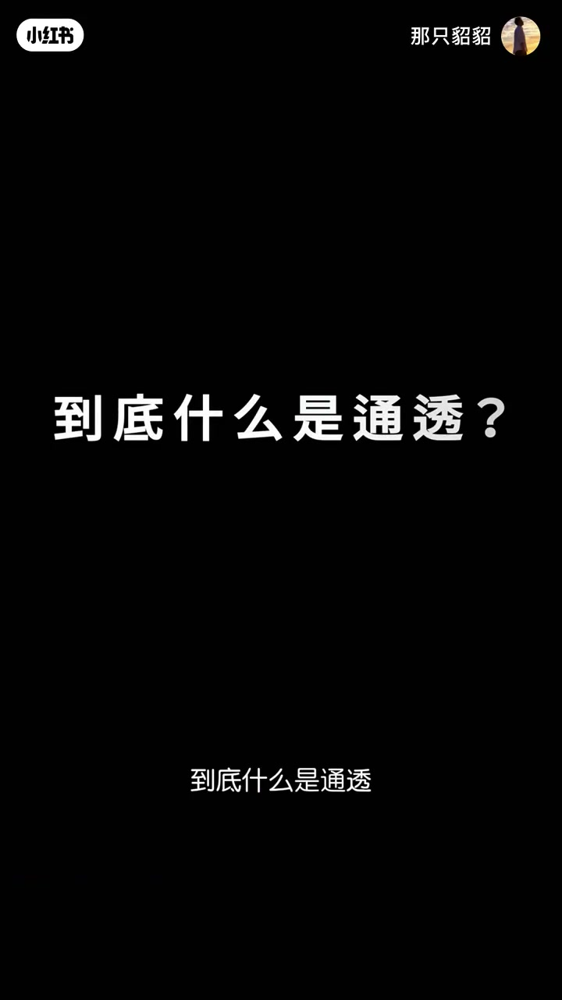
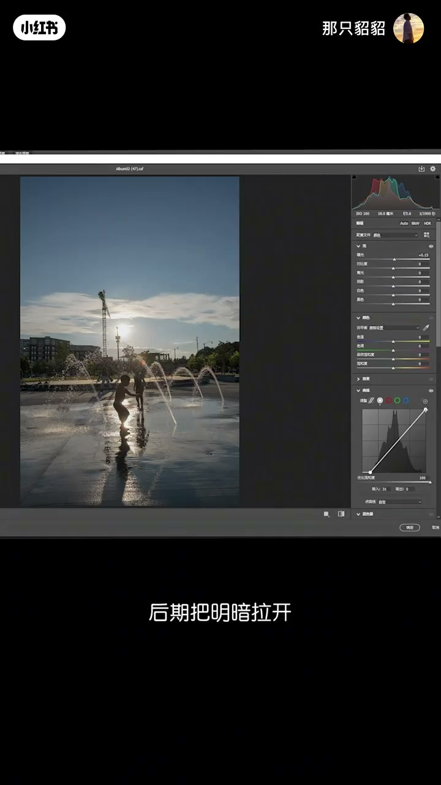
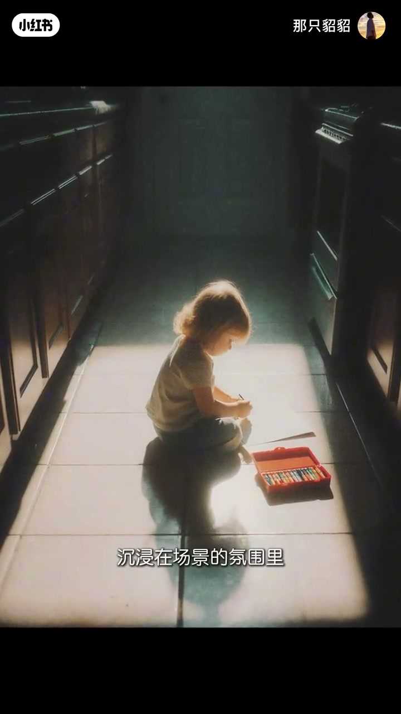
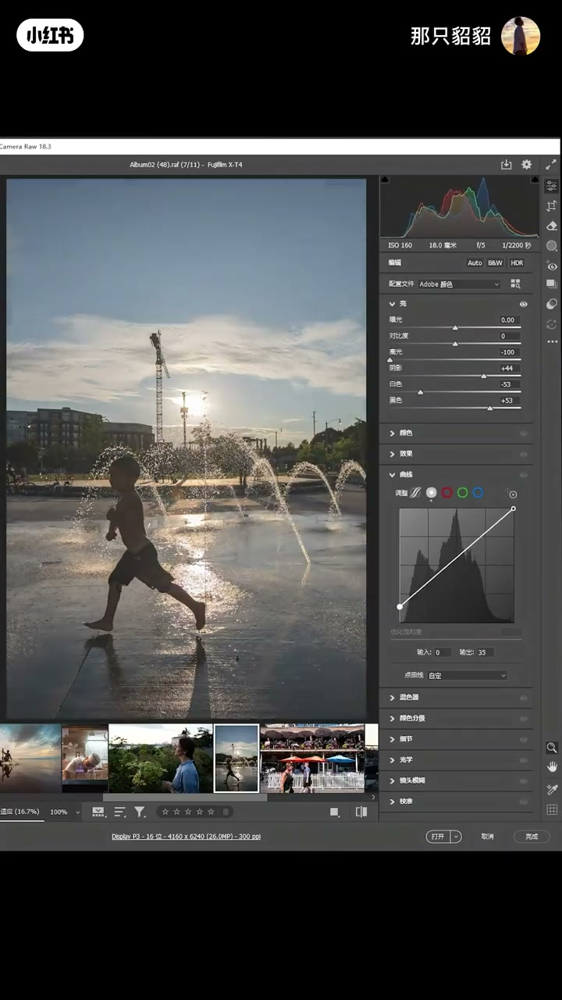
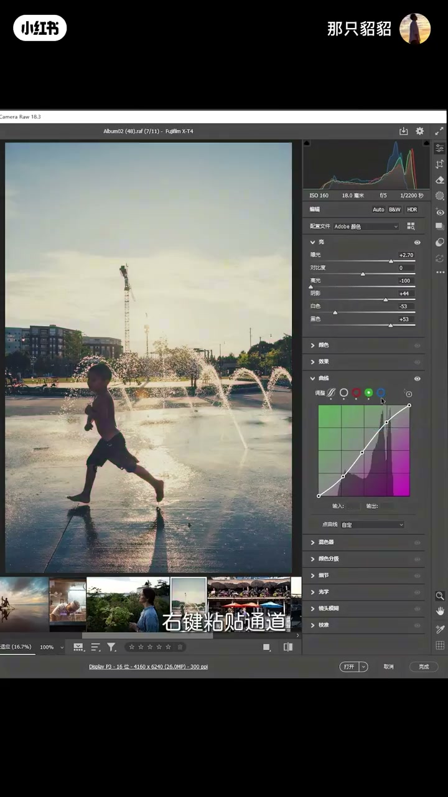
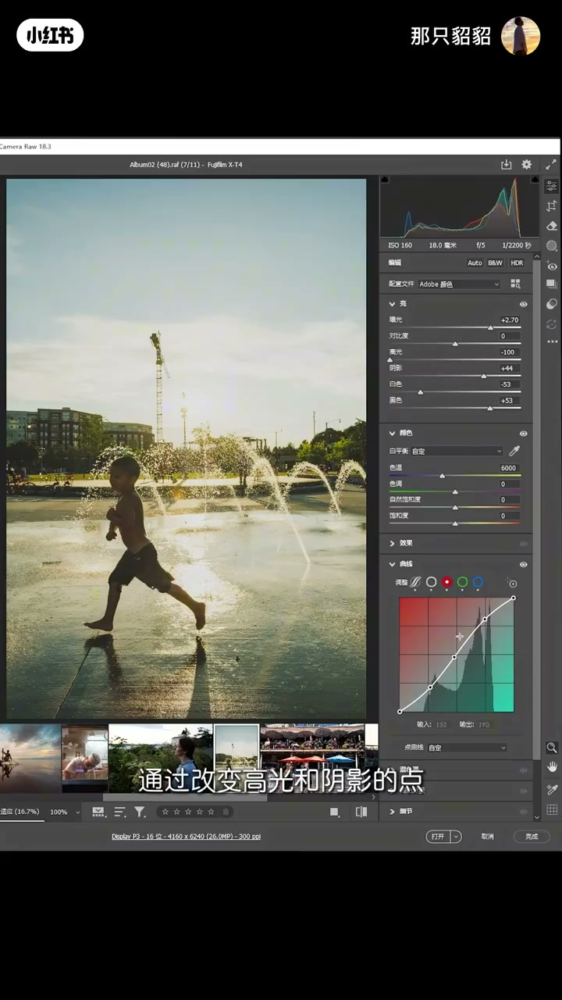
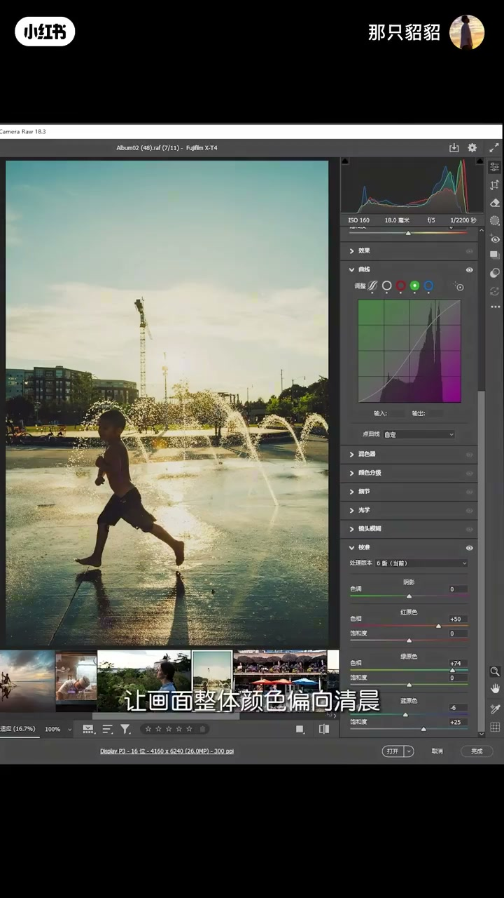
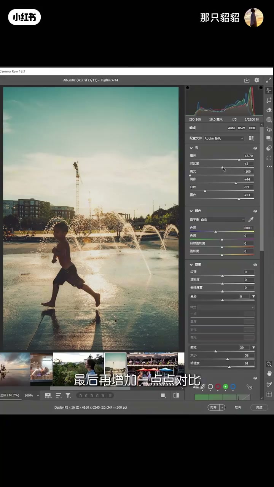
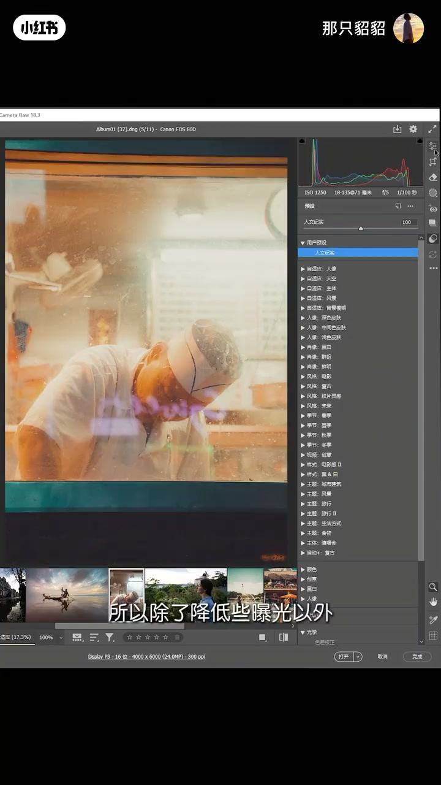

内容要点
一支 5 分 44 秒的人像/街拍后期调色教程。先从「通透」这个高频词讲起：通透不是把直方图两端顶到纯黑纯白，而是光影层次有序、色彩干净不浑浊。接着用一组人文街拍原片演示低反差电影感的完整调色流程——影调压缩、RGB S 型曲线、蓝曲线高光加暖、校准偏青橙、柔焦与颗粒。最后把参数存成预设，多场景通用。
知识结构
别人说你不通透，是因为刚学调色时用「拉曲线补全直方图两端」去灰，久而久之被当成通用标准。通透的本质是光影层次有序、色彩干净不浑浊，核心是干净度和分离度，与反差高低没有必然关系。
高反差高清晰适合商业产品、婚纱写真——聚焦主体、制造视觉冲击；低反差把影调压缩在中间灰区间，没有刺眼明暗冲突，让人沉浸在场景氛围里，适合人文纪实。
先提阴影和黑色、压高光和白色，把像素压缩到中间区域；再在曲线里把黑点上提白点下压，中间调压暗、亮调微提；最后调曝光，整体光影层次就出来了。
加色温偏暖、减色调；在红绿蓝曲线里通过改变高光/阴影点加颜色——如蓝曲线高光下压等于加黄色；校准面板红绿色相右移、蓝色左移、加蓝饱和度；混色器降低颜色饱和度防溢出，黄往沉色靠、天空蓝往青靠。
蒙版选亮度范围高光区，降清晰度做柔焦；加颗粒和一点对比。把参数存成预设（勾选蒙版），换其他照片只需微调曝光和色温，人像同样适用。
人文纪实色调 = 低反差影调（提暗压亮、中间调压缩）+ 冷暖对比（高光加暖、阴影加冷）+ 青橙调性（校准面板）+ 柔焦颗粒。通透的关键是干净度与分离度，不是死记黑位白位。
00:00-01:41通透不是拉满对比
「你调完样图自己觉得还不错，结果别人一句不够通透，直接给你整不会了。」这是几乎所有调色新手都踩过的坑。视频由此引出第一个概念：到底什么是通透？
主播解释，很多人刚学调色时最容易踩的坑是画面发灰发闷，「拉曲线补全直方图两端加对比，是见效最快的去灰方法」——久而久之，这个去灰技巧被当成了照片好坏的通用评判标准。
「很多人觉得直方图两端顶到纯黑纯白才叫通透，反之就是不通透，这其实是对通透的片面理解。」原片明暗集中在中间调，恰恰是保留最多细节的健康状态，后期把明暗拉开只是众多影调风格里的一种选择。
「通透的本质是光影层次有序，色彩干净不浑浊，画面有清晰的空气感，核心是干净度和分离度。」高反差能做出锐利的通透感，低反差同样能做出柔和干净的通透感——它和反差高低没有必然关系。


00:58-01:41高反差与低反差的分工
「纯黑和纯白是很强的视觉刺激，会第一时间抓住眼球，带来锐利硬朗的质感，但也容易打断沉浸感。」所以高反差高清晰的画面，核心是展示——展示细节、展示主体质感，观众的注意力停留在画面本身的形式上。
「适合商业产品、婚纱写真这类需要突出主体、制造视觉冲击的题材。」而低反差画面把所有影调压缩在柔和的中间灰区间，没有刺眼的明暗冲突，「反而能让人自然地沉浸在场景的氛围里」。
明确了目标后，视频用一组人文街拍原片做案例，演示如何调出这种有故事感的低反差色调。

01:41-03:00影调压缩：控明暗结构
「先调影调、控明暗结构，主要工具是基础亮度面板和曲线。」因为这类片子要避免过强的黑和白，要把像素压缩在中间区域。
「先把照片的暗部，也就是阴影和黑色提起来；再把照片的亮部，也就是高光和白色往下压。」
「还不够，我们再来到曲线：将黑色的点往上提，白色的点往下压。」这类片子以低中调为主，所以中间调压暗一些，参数曲线里再把亮调提起来一些。
「整体光影层次有了，但整体画面太暗，所以把曝光提起来。」此时画面有些灰，主播来到红色曲线：在高光、中间调、阴影打三个点，高光上提、阴影下压，然后右键复制这条通道，分别粘贴到绿色和蓝色曲线。
「这里我们同时给红绿蓝增加形态一样的 S 型曲线，它们的颜色不会发生改变，但是会增加画面的对比度。」这是三曲线同形 S 型的小技巧。


03:00-04:26颜色控制：冷暖对比与青橙调
「调整好画面的基础影调，我们再来调整它的颜色。」首先到颜色面板增加色温让画面偏暖；考虑到预色的通用性，「把色调减掉」。
关键一步：「可以在红绿蓝三条颜色曲线里，通过改变高光和阴影的点，给画面整体增加些颜色。」以蓝色曲线为例：想让高光有暖色，只需把蓝色曲线的高光点往下压——下压蓝色等于减少蓝色，也就是增加它的互补色黄色。
「按照这种方式，我们给高光加暖色、暗部加冷色，就可以让画面整体颜色基调呈现冷暖对比。」
接着到校准面板：红颜色和绿颜色色相往右移，蓝颜色色相往左移，适当增加蓝颜色的饱和度，「让画面整体颜色偏向青橙」。再到混色器把颜色饱和度适当降低避免溢出，黄色色相往左移让暖色更沉一些，天空蓝往青色靠、饱和度与明度都降低。


04:26-05:44柔焦、颗粒与预设固化
「接着我们要做一些高光朦胧的效果。」到蒙版面板选范围→亮度范围，把亮度范围控制在高光区域，将过渡的羽化拉大一些，「将它的清晰度降低，这样就可以营造一种高光柔焦的效果」。
「最后我们再增加一些颗粒。」到效果→颗粒，添加一些颗粒，「最后再增加一点点对比」。
「我们将调整好的参数存为一个预设，将蒙版也勾上。」这样后续可以直接复用整个调整流程。
「我们来测试一下其他场景的照片。因为每张照片的亮度不同，所以我们需要微调曝光。」将画面压暗一些，对比看看——「这种色调就很具有电影感」。
再试人像效果：这张图原图色温比较高，「所以除了降低一些曝光以外，还可以降低一些色温」。说明预设是底子，实际用的时候要根据原图微调。


完整转录（146段）
以下文本由 Whisper medium 模型自动转录，可能存在少量识别误差，已尽可能修正。
你一定遇到过这个问题
你调完样图自己觉得还不错
结果别人一句不够通透
直接给你整不回了
到底什么是通透
它是平凡照片好坏的标准吗
今天我们就从通透了解
教你几个关键步骤
带你调出有故事感的人文技术色调
为什么我们总把通透当成调色标准
因为刚学调色的时候
最容易踩的坑就是画面发灰发闷
而拉曲线补全直方图两端加对比
是见效最快的去灰方法
久而久之
这个新手机就技巧就被当成了
照片好坏的通用平板标准
很多人觉得直方图两端顶到纯黑纯白才叫通透
反之就是不通透
这其实是对通透的片面理解
甚至有人觉得肉圆片发灰就是质量差
恰恰相反
圆片明暗集中在中间调
是保留的最多细节的健康状态
后期把明暗拉开
只是众多影调风格里的一种选择
通透的本质是光影层次有序
色彩干净不浑浊
画面有清晰的空气感
核心是干净度和分离度
高反差能做出锐利的通透感
低反差同样能做出柔和干净的通透感
它和反差高低没有必然关系
纯黑和纯白是很强的视觉刺激
会第一时间抓住眼球
带来锐利硬朗的质感
但也容易打断沉浸感
所以高反差高清晰的画面
核心是展示
展示细节
展示主体质感
观众的注意力会停留在画面本身的形式上
适合商业产品
婚纱写真这类需要突出主体
制造视觉冲击的题材
而低反差的画面
把所有的影调压缩在柔和的中间灰区间
没有刺眼的明暗冲突
反而能让人自然的沉浸在场景的氛围里
接下来我们就拿一组人文街拍原片
教你如何调出这种有故事感的低反差色调
我们用这张做案例演示
先调影调 控明暗结构
主要工具 基础亮度面板和曲线
我们前面说过
这类片子要避免过强的黑和白
要把像素压缩在中间区域
所以我们先把照片的暗部
也就是阴影和黑色提起来
再把照片的亮部
也就是高光和白色往下压
还不够
我们再来到曲线
将黑色的点往上提
白色的点往下压
这类片子都以低中调为主
所以我们在中间调压暗一些
适当在参数曲线里把亮调提起来一些
整体光影层次有了
但整体画面太暗
所以把曝光提起来
现在整体画面有些灰
我们来到红色曲线
我们在高光中间调和阴影打三个点
将它的高光往上提
阴影往下压
右键复制这条通道
再来到绿色曲线
右键粘贴通道
同样蓝色曲线粘贴通道
这里我们同时给红绿蓝
增加形态一样的S型曲线
它们的颜色不会发生改变
但是会增加画面的对比度
调整好画面的基础影调
我们再来调整它的颜色
我们首先来到颜色里
增加些色温让画面整体偏暖
因为我们要考虑预色的通用性
所以我们把色调减掉
关键的一步
我们可以在红绿蓝三条颜色曲线里
通过改变高光和阴影的点
给画面整体增加些颜色
例如我们选择蓝色曲线
我们想要在高光里增加一些暖色
我们只需要把蓝色曲线的高光点往下压
既可以给高光增加黄色
这里我们下压蓝色的点
相当于在减少蓝色
也就是在增加它的互补色黄色
按照这种方式
我们给高光加暖色
暗不加冷色
就可以让画面整体颜色基调
呈现冷暖对比
再来到校准里
将红颜色和绿颜色色相往右移
将蓝颜色色相往左移
适当增加些蓝颜色的饱和度
让画面整体颜色偏向青澄
接着我们来到混色器
将画面中颜色的饱和度适当降低一些
避免画面中颜色溢出
可以将黄色的色相往左移动
让整体的暖色更偏沉一些
将天空的蓝色往青色靠
饱和度适当降低
明度也降低
接着我们要做一些高光朦胧的效果
我们来到盲板里
选择范围
找到亮度范围
将我们的亮度范围控制在高光区域
将过度的以画质拉大一些
这里我们将它的清晰度降低
这样就可以营造一种高光柔焦的效果
前后对比看看
最后我们再增加一些颗粒
找到效果
找到颗粒
添加一些颗粒
最后再增加一点点对比
我们将调整好的参数存为一个预设
将盲板也勾上
我们来测试一下其他场景的照片
因为每张照片的亮度不同
所以我们需要微调曝光
我们将它压暗一些
对比看看
我们多来测试几张
这种色调就很具有电影感
再试试人像的效果
这张图原图色温比较高
所以除了降低一些曝光以外
还可以降低一些色温